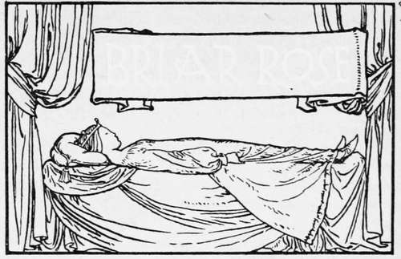
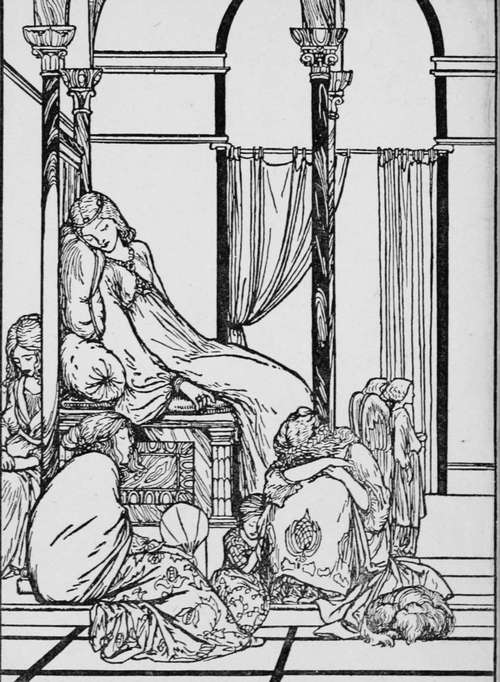
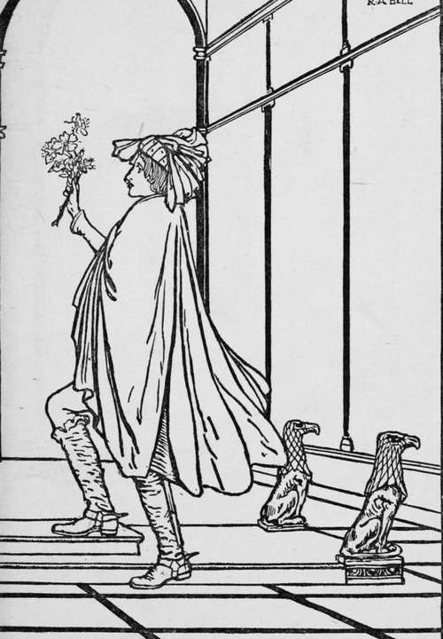

Briar Rose
Description
This section is from the book "Household Tales by Brothers Grimm", by Brothers Grimm. Also available from Amazon: Household Tales by Brothers Grimm.
Briar Rose
A king and queen once upon a time reigned in a country a great way off, where there were in those days fairies. Now this king and queen had plenty of money, and plenty of fine clothes to wear, and plenty of good things to eat and drink, and a coach to ride out in every day: but though they had been married many years they had no children, and this grieved them very much indeed. But one day as the queen was walking by the side of the river, at the bottom of the garden, she saw a poor little fish, that had thrown itself out of the water, and lay gasping and nearly dead on the bank. Then the queen took pity on the little fish, and threw it back again into the river; and before it swam away it lifted its head out of the water and said, " I know what your wish is, and it shall be fulfilled, in return for your kindness to me—you will soon have a daughter." What the little fish had foretold soon came to pass; and the queen had a little girl, so very beautiful that the king could not cease looking on it for joy, and said he would hold a great feast and make merry, and show the child to all the land. So he asked his kinsmen, and nobles, and friends, and neighbours. But the queen said, " I will have the fairies also, that they might be kind and good to our little daughter." Now there were thirteen fairies in the kingdom; but as the king and queen had only twelve golden dishes for them to eat out of, they were forced to leave one of the fairies without asking her. So twelve fairies came, each with a high red cap on her head, and red shoes with high heels on her feet, and a long white wand in her hand : and after the feast was over they gathered round in a ring and gave all their best gifts to the little princess. One gave her goodness, another beauty, another riches, and so on till she had all that was good in the world.
Just as eleven of them had done blessing her, a great noise was heard in the courtyard, and word was brought that the thirteenth fairy was come, with a black cap on her head, and black shoes on her feet, and a broomstick in her hand: and presently up she came into the dining-hall. Now as she had not been asked to the feast she was very angry, and scolded the king and queen very much, and set to work to take her revenge. So she cried out, " The king's daughter shall, in her fifteenth year, be wounded by a spindle, and fall down dead." Then the twelfth of the friendly fairies, who had not yet given her gift, came forward, and said that the evil wish must be fulfilled, but that she could soften its mischief; so her gift was, that the king's daughter, when the spindle wounded her, should not really die, but should only fall asleep for a hundred years.
However, the king hoped still to save his dear child altogether from the threatened evil; so he ordered that all the spindles in the kingdom should be bought up and burnt. But all the gifts of the first eleven fairies were in the meantime fulfilled; for the princess was so beautiful, and well-behaved, and good, and wise, that every one who knew her loved her.
It happened that, on the very day she was fifteen years old, the king and queen were not at home; and she was left alone in the palace. So she roved about by herself, and looked at all the rooms and chambers; till at last she came to an old tower, to which there was a narrow staircase ending with a little door. In the door there was a golden key, and when she turned it the door sprang open, and there sat an old lady spinning away very busily. " Why, how now, good mother," said the princess, " what are you doing there ?" "Spinning," said the old lady, and nodded her head; humming a tune, while buzz! went the wheel. " How prettily that little thing turns round!" said the princess, and took the spindle and began to try and spin. But scarcely had she touched it, before the fairy's prophecy was fulfilled; the spindle wounded her, and she fell down lifeless on the ground.
However, she was not dead, but had only fallen into a deep sleep; and the king and the queen, who just then came home, and all their court, fell asleep too; and the horses slept in the stables, and the dogs in the court, the pigeons on the house-top, and the very flies slept upon the walls. Even the fire on the hearth left off blazing, and went to sleep; the jack stopped, and the spit that was turning about with a goose upon it for the king's dinner stood still; and the cook, who was at that moment pulling the kitchen-boy by the hair to give him a box on the ear for something he had done amiss, let him go, and both fell asleep; the butler, who was slily tasting the ale, fell asleep with the jug at his lips: and thus everything stood still, and slept soundly.
A large hedge of thorns soon grew round the palace, and every year it became higher and thicker; till at last the old palace was surrounded and hidden, so that not even the roof or the chimneys could be seen. But there went a report through all the land of the beautiful sleeping Briar-Rose (for so the king's daughter was called) : so that, from time to time, several kings' sons came, and tried to break through the thicket into the palace. This, however, none of them could ever do; for the thorns and bushes laid hold of them, as it were with hands; and there they stuck fast, and died wretchedly.
After many many years there came a king's son into that land : and an old man told him the story of the thicket of thorns; and how a beautiful palace stood behind it, and how a wonderful princess, called Briar-Rose, lay in it asleep, with all her court. He told, too, how he had heard from his grandfather that many many princes had come, and had tried to break through the thicket, but that they had all stuck fast in it, and died. Then the young prince said, "All this shall not frighten me, I will go and see this Briar-Rose." The old man tried to hinder him, but he was bent upon going.
Now that very day the hundred years were ended; and as the prince came to the thicket, he saw nothing but beautiful flowering shrubs, through which he went with ease, and they shut in after him as thick as ever. Then he came at last to the palace, and there in the court lay the dogs asleep; and the horses were standing in the stables; and on the roof sat the pigeons fast asleep, with their heads under their wings. And when he came into the palace, the flies were sleeping on the walls; the spit was standing still; the butler had the jug of ale at his lips, going to drink a draught; the maid sat with a fowl in her lap ready to be plucked; and the cook in the kitchen was still holding up her hand, as if she was going to beat the boy.
Then he went on still further, and all was so still that he could hear every breath he drew; till at last he came to the old tower, and opened the door of the little room in which Briar-Rose was; and there she lay, fast asleep on a couch by the window. She looked so beautiful that he could not take his eyes off her, so he stooped down and gave her a kiss. But the moment he kissed her she opened her eyes and awoke, and smiled upon him; and they went out together; and soon the king and queen also awoke, and all the court, and gazed on each other with great wonder. And the horses shook themselves, and the dogs jumped up and barked; the pigeons took their heads from under their wings, and looked about and flew into the fields; the flies on the walls buzzed again; the fire in the kitchen blazed up; round went the jack, and round went the spit, with the goose for the king's dinner upon it; the butler finished his draught of ale; the maid went on plucking the fowl; and the cook gave the boy the box on his ear.
And then the prince and Briar-Rose were married, and the wedding feast was given; and they lived happily together all their lives long.
Continue to:
Tags
fairy tales, children's stories, brothers grimm, household tales